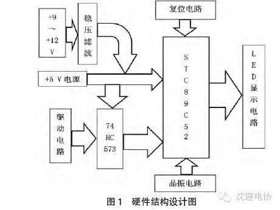
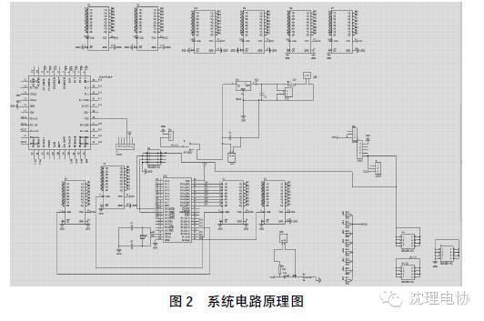
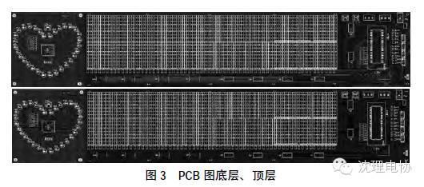
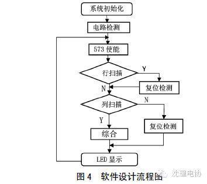
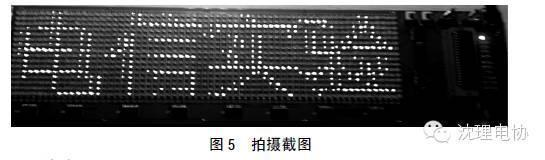

使用小程序
随着LED 显示屏在广告领域的广泛应用，控制系统也在逐步发展。由于控制系统是基于嵌入式微处理器而开发的，所以，单片机在其中占有非常重要的位置。LED 显示屏的控制比较复杂，特别是其特殊效果的显示，比如循环移动、覆盖霓虹灯效果，对处理器的运算速度和执行效率提出了很高的要求，因此，很多控制器生产厂家都采用高端嵌入式系统进行设计。这样做，虽然能在一定程度上提高数据的处理速度，但并不能完全满足所有显示效果的要求，而且开发成本和产品成本也会成倍长，甚至由于设计不当还可能会在显示时出现画面抖动、闪烁和重影等情况。归根结底，在LED 显示屏控制器的设计中，硬件是很重要的因素之一，同时，还要考虑显示数据的组织方式，采用软硬件结合的方法设计一款性价比比较高的控制器。本文简要介绍了基于普通52 单片机实现LED 显示屏控制的原理和方法。该处理器运算速度快、执行效率高，显示画面时不会出现抖动、闪烁和重影等情况，光彩绚烂夺目，让人有一种视觉上的享受。
1 系统总体方案设计
该设计将STC89C52 作为控制芯片，数据扫描采用8 位74HC573 锁存器驱动芯片，电源输入部分采用3 种不同的方式供电，电源部分采用稳定的+5 V 直流电，可以通过开关选择供电方式。这个系统是利用单个LED 元器件来显示需要显示的内容，有效延长了作品的使用年限。
控制系统和外围电路主要由 STC89C52 单片机最小系统、电源电路、滤波电路、74HC573 驱动电路和LED 显示电路构成。
硬件设计如图1 所示。

2 硬件部分的设计
2.1 LED 的驱动电路和扫描电路
在设计过程中，严密计算每个LED 的最佳亮度电流和74HC573 每个输入/输出口的最大电流，从而设计出LED 显示部分的驱动电路和显示电路。为了避免元件被损坏，还设计了保护电路。此次采用的是8 位74HC573 芯片，其数据传输非常方便，能够很好地驱动LED 显示，使单个LED 达到最佳的亮度。扫描部分利用74HC573 三态总线驱动输出，当锁存使能高时，这些器件的锁存对于数据是透明的（也就是说输出步）；当锁存使能变低时，符合建立时间和保持时间的数据会被锁存，8 行8 列的扫描也会顺利进行。与此同时，使能输入还具有改善抗扰度的滞后作用，以至于显示出的画面不会出现抖动、闪烁和重影等情况。
2.2 电源电路
该系统的有效运行需要借助稳定的+5 V 直流电压。电源电路分为3 部分，即由mini USB 常用数据线直接供+5 V 电，但是，这种供电方式必须配合使用电流为2 A 的电源适配器；由+9～+12 V电源适配器供电输入，然后经2 个过滤波电路和1 个稳压电路输出稳定的+5 V 电源，以此给系统供电；直接接入AC220 V 电源，经开关电源电路获得+5 V 电源供电。在此过程中需要注意的是，这三种方式可以自由切换，使用者可以根据实际情况使用相应的电源。其中，74HC573 芯片和STC89C52 单片机是电源直接供电，能够保证供电的稳定性。电源设计使用LM7805 稳压芯片作为稳压电路的主要芯片，并通过多次滤波保证电压转换的稳定性和抗
2.3 系统电路设计
使用Altium Designer Summer 2009 软件设计系统电路原理图和PCB 图，具体如图2、图3 所示。


3 软件部分的设计
软件部分主要分为使能输出、行列扫描和显示三大部分。因为需要2 个行扫描的74HC573 芯片和8 个列扫描的74HC573芯片，所以，使能端高电、低电输入顺序的排布算法十分重要。显示部分的内容是通过取模软件转换为16 进制的格式存放在数组中的，方便使用。软件设计流程如图4 所示。


4 系统联调
程序是利用Keil 4 软件编写、调试的，而需要调试的主要有显示屏刷新频率和行列扫描两部分。在行列扫描部分要特别注意74HC573 芯片的启动和停止情况，否则会出现大量的乱码。通过对硬件和软件的多次联调得出了图5 所示的效果（在滚动中拍摄截图）。
5 结论
综上所述，在目测条件下，LED 显示屏的各点亮度均匀、充足，可以显示图形和文字，并且显示的图形和文字稳定、清晰，无串扰、抖动、闪烁和重影等情况发生。
编辑/高星华